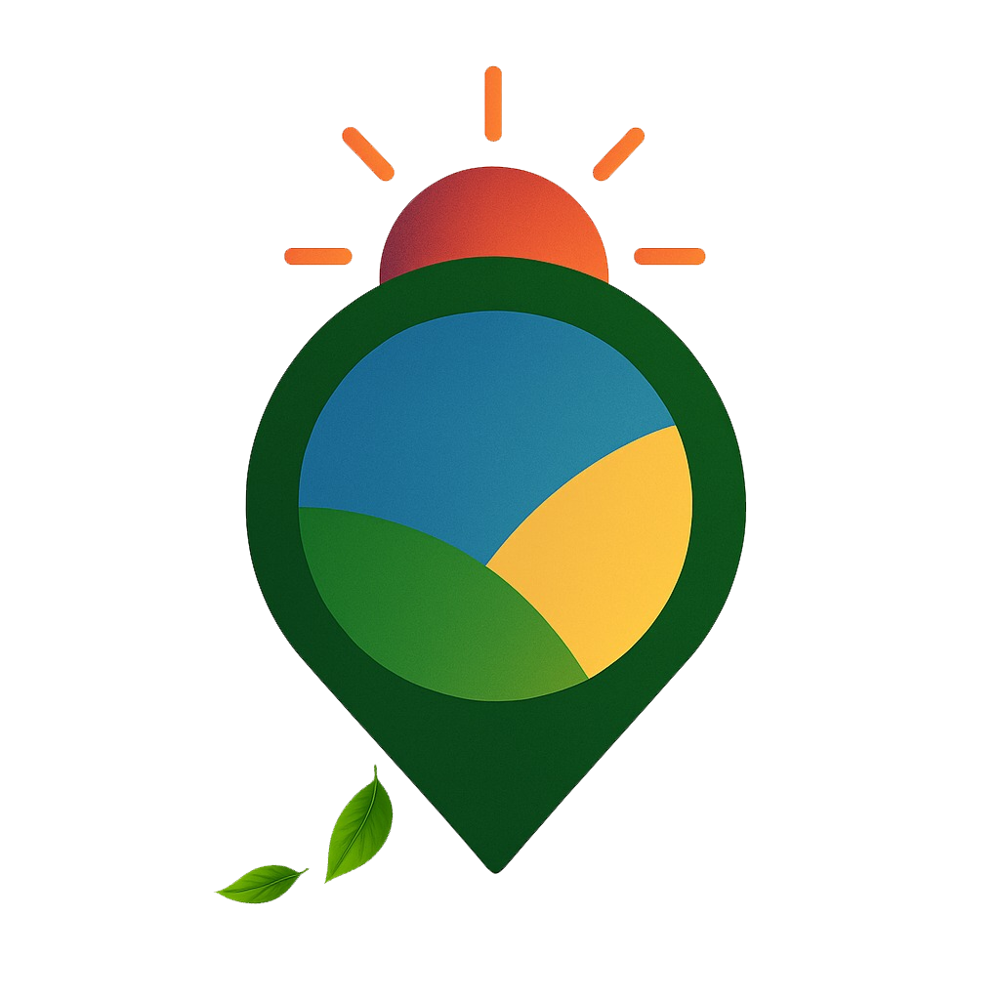

Geoportal de Amambai - MS
Medir:
Distância
Área
Limpar
Buscar:
BIC
Endereço
Imóveis Rurais
Buscar
Camadas:
Plano diretor
Eixo de Adensamento
Área interesse ambiental
Área interesse econômico
Área interesse social1
Área interesse social2
Área interesse urbano
Área de Expansão Urbana
Macrozoneamento
Zoneamento Urbano
Área de Proteção Cultural
Infraestrutura
Lotes Urbanos
Edificações
Pavimentação
Rede de água
Rede de esgoto
Locais de interesse
Assistência Social
Educação
Prefeitura
Saúde
Gerais
Perímetro do Município
Terras Indígenas
Sub-bacias do Rio Paraná
Cursos d'água Amambai
Tipos de vegetação
Área rural
Imóveis SIGEF
Imóveis SNCI
Mapa Base:
OpenStreetMap
Satélite
Lon: --, Lat: --